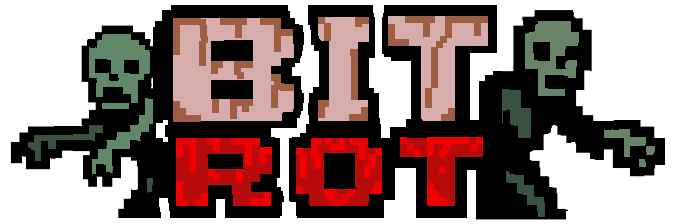

THE WORLD IS DEAD. BUSINESS IS BOOMING...
...AND EVERYBODY HAS TO LOOT.
Test the latest mechanics directly in your browser. Note: The web terminal runs at a lower framerate but features the most recent experimental builds.
Initialize Web Client
Surviving alone is a statistical error. Download the stable desktop build, report anomalies, and share your runs with the community.
Discord | Itch Forums